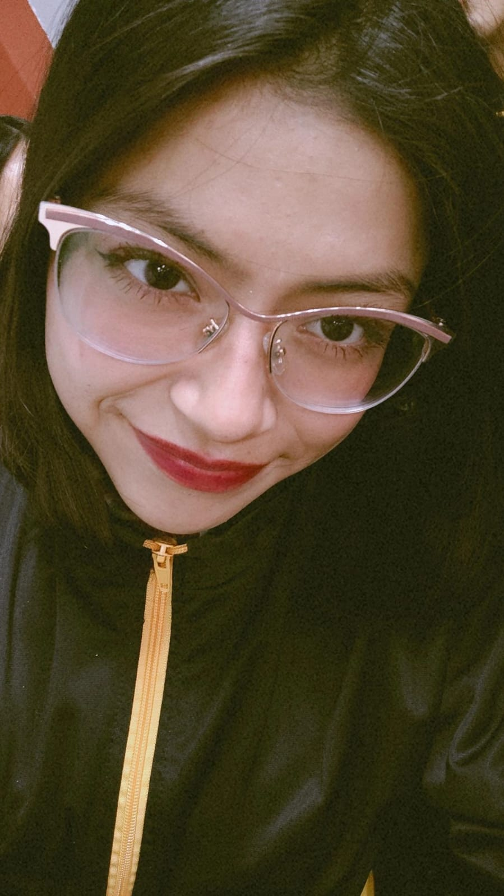

Portafolio Innovador:
“Interacciones de calidad y Desarrollo en la Primera infancia I”
Estudiante: Cinthya Nicoll Ocas Hoyos
Curso: Práctica e Investigación
Docente: Regina Briones Ciriaco
Fecha: 06 de agosto de 2025
Curso: Práctica e Investigación
Docente: Regina Briones Ciriaco
Fecha: 06 de agosto de 2025

Cinthya N. Ocas Hoyos
Eduacción Inicial
üí°√çndice
-
La importancia del portafolio en el aprendizaje.
-
a) Sílabo del módulo.
b) Autorretrato del estudiante. -
Documentos, imágenes, trabajos y materiales.
Evidencia del proyecto integrador. -
Reflexiones personales, autoevaluaciones y coevaluaciones.
-
Contenidos propuestos por el IESPP o EESP.